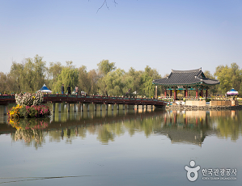
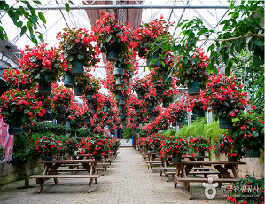
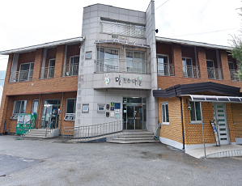

서바이벌체험장, 밀리터리체험관, 선샤인 스튜디오, 1950 낭만스튜디오 4군데로 나눠져 있다.
최신의 VR 기술을 활용한 밀리터리체험관과 온몸으로 뛰며 즐기는 서바이벌체험을 통해 다양한 즐거움을 체험할 수 있다.
또한 한국전쟁에서 끝난 1950년대를 재현한 세트장은 과거의 추억여행을 할수 있고 동시에 새로운 세대에게에는 역사의 현장을 느낄수 있는 공간이다.
서동공원과 궁남지

백제 무왕의 연못, 서동공원과 궁남지
* 백제 무왕의 연못, 서동공원과 궁남지 *
궁남지(사적 제135호)는 선화공주와의 사랑으로 유명한 백제 무왕이 만들었다는 왕궁의 남쪽 별궁에 속한 우리 나라 최초의 인공 연못으로,
『삼국사기』의 기록을 근거로 궁남지라 부른다. 삼국사기 기록에 의하면 무왕 35년(634)에 “궁성의 남쪽에 못을 파고 20여리나 되는 곳에서 물을 끌어 들여 주위에 버드나무를 심고,
못 한가운데에는 중국 전설에 나오는 삼신산의 하나인 방장선산을 모방한 섬을 만들었다”고
하였다. 현재의 연못은 1965~67년에 복원한 것으로, 원래 자연늪지의 1/3정도의 규모이다.
이 연못에 대해서는 『삼국사기』무왕조(武王條)에 "3월에 궁성(宮城) 남쪽에 연못을 파고 물을 20여리나 되는 긴 수로로 끌어들였으며
물가 주변의 사방에는 버드나무를 심고 못 가운데에는 섬을 만들어 방장선산(方丈仙山)을 본떴다"라고 되어 있다.
사실, 백제에서 왕궁 근처에 연못을 만드는 전통은 이미 한성시대(漢城時代)부터 시작되었다.
다만, 한성시대에 조영된 왕궁에 딸린 연못은 아직 발굴된 바 없어서 그 실체를
확인하지 못하고 있다.
그에 비해 웅진(熊津)시대의 왕궁이었던 공산성(公山城) 안에서는 당시의 것으로 판단되는 연못이 왕궁지(王宮址)로 추정되는 건물지(建物址)와 함께 발굴되었다.
공산성에서 발굴된 이 연못은 바닥이 좁고 위로 올라갈수록 넓어지는 원형의 연못인데 직경 7.3m, 바닥직경 4.8m, 깊이 3m의 크기를 보이고 있다.
이로써 보면 백제에서 왕궁 근처에 연못을 만드는 전통은 매우 오래된 것임을 알 수
있다.
그러나, 한성시대와 웅진시대의 연못은 그 자체만 확인될 뿐 여기에서와 같은 삼신산(三神山)의 존재는 확인되지 않는다.
* 궁남지의 의의 *
궁남지의 설화에 나오는 무왕이 서동이라는 것을 미루어 이곳이 별궁터였고 궁남지가 백제 왕과 깊은 관계가 있는 별궁의 연못이었음을 추측하게 한다.
백제의 정원(庭園)을 연구하는 데 중요한 자료가 된다. 한편, 《일본서기(日本書紀)》에는 궁남지의 조경(造景) 기술이 일본에 건너가 일본 조경의 원류(源流)가 되었다고 전하고 있다.
세계꽃식물원

사계절 아름다운 꽃을 볼 수 있는 곳
2004년 3월, 농민조합원 등으로 구성된 영농 조합 법인이 네덜란드식 가든 센터를 본떠 조성한 곳이다.
세계적으로 유명한 원예종 식물들을 연중 소개하고
3,000여 종의 꽃과 식물이 8천 평의 유리온실에 전시되고 있다. 매년 다양한 꽃을 주제로 축제도 열리는데,
1~2월에는 겨울꽃 축제, 3~4월에는 튤립, 수선화, 동백꽃 축제 등 2개월에 한 번씩 주제가 바뀐다. 예쁜 꽃과 잎으로 손수건을 디자인하거나 분갈이
체험도 할 수 있다.
* 규모
1) 부지 면적 - 총 부지 5.4㏊, 온실 2.8㏊, 실내식물원 1.8㏊
2) 전시관 조성 - 세계 유명 꽃 1,000여 종, 생태연못 등
※ 반려견 동반 여행 정보
- 4kg 이하 소형견만 목줄 착용 후 출입가능
온천수의 주요 성분은 칼슘, 라듐, 마그네슘 등의 성분이 골고루 함유되어 있으며 온천수의 주요 효능으로는 피부노화 방지 및 갱년기
장애예방, 당뇨병의 예방과 치유, 항암과 암치료, 피로회복 및 스트레스 해소, 위장병 치유, 성인병 예방과 치유, 신경통, 류마티스, 습진, 피부병, 냉증, 부인병 등의 좋다.
알프스마을

천장처럼 높다는 뜻의 천장리라고도 불리우는 마을
칠갑산은 충남의 알프스라고 합니다.
칠갑삽 정상 바로 아래 칠갑산 산기슭에 자리잡은 마을로 천장처럼 높다는 뜻으로 천장리라 하며 아름다운 천장호수와 더불어 천장리 알프스마을로 불리게 되었다.
알프스마을에는 칠갑산 등산로와 천장호수를 가로 지르는 한국 최장의 천장호 출렁다리와 도농교류센터, 웰빙체험농원이 있으며 매년 겨울이면 많은 방문객들이
붐비는 얼음분수축제가 열리는 마을이며, 눈과 얼음으로 만들어진 조각 작품도 감상할 수 있으며 각종 썰매, 얼음 봅슬레이 체험도 즐길 수 있는 축제입니다.